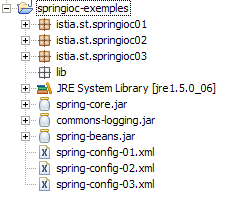

15. Spring IoC
15.1. مقدمة
نهدف إلى استكشاف قدرات التكوين والتكامل في إطار عمل Spring (http://www.springframework.org) وكذلك تعريف واستخدام مفهوم IoC (انعكاس التحكم)، المعروف أيضًا باسم حقن التبعية
لننظر إلى التطبيق ثلاثي الطبقات الذي أنشأناه للتو:
 |
للاستجابة لطلبات المستخدم، يجب أن يتواصل وحدة التحكم [Application] مع طبقة [service]. في مثالنا، كانت هذه مثيلًا من النوع [DaoImpl]. حصلت وحدة التحكم [Application] على مرجع إلى طبقة [service] في طريقة [init] الخاصة بها (القسم 14.8.3):
- السطر 6: تم إنشاء مثيل لطبقة [dao] عن طريق إنشاء مثيل [DaoImpl] بشكل صريح
- السطر 9: تم إنشاء مثيل لطبقة [service] عن طريق إنشاء مثيل لـ [ServiceImpl] بشكل صريح
تذكر أن فئتي [DaoImpl] و [ServiceImpl] تنفذان واجهات، وتحديدًا واجهتي [IDao] و [IService] على التوالي. في الإصدارات المستقبلية، سيتم تنفيذ واجهة [IDao] بواسطة فئة تدير قائمة بالأشخاص المخزنة في قاعدة بيانات. لنسمي هذه الفئة [DaoBD] لأغراض هذا المثال. سيتطلب استبدال تنفيذ [DaoImpl] لطبقة [dao] بتنفيذ [DaoBD] إعادة ترجمة طبقة [web]. في الواقع، يجب الآن على السطر 6 أعلاه، الذي ينشئ مثيلًا لطبقة [dao] بنوع [DaoImpl]، أن ينشئ مثيلًا لها بنوع [DaoBD]. وبالتالي، فإن طبقة [web] لدينا تعتمد على طبقة [dao]. يوضح السطر 9 أعلاه أنها تعتمد أيضًا على طبقة [service].
سيسمح لنا Spring IoC بإنشاء تطبيق ثلاثي الطبقات حيث تكون الطبقات مستقلة عن بعضها البعض، أي أن تغيير إحداها لا يتطلب تغيير الطبقات الأخرى. وهذا يوفر مرونة كبيرة في تطوير التطبيق.
ستتطور البنية السابقة على النحو التالي:
 |
باستخدام [Spring IoC]، سيحصل وحدة التحكم [Application] على المرجع الذي تحتاجه من طبقة [service] على النحو التالي:
- في طريقة [init] الخاصة بها، ستطلب من طبقة [Spring IoC] توفير مرجع إلى طبقة [service]
- ثم ستستخدم [Spring IoC] ملف XML للتكوين يحدد لها الفئة التي يجب إنشاء مثيل لها وكيفية تهيئتها.
- تُرجع [Spring IoC] المرجع إلى طبقة [الخدمة] التي تم إنشاؤها إلى وحدة التحكم [التطبيق].
ميزة هذا الحل هي أن أسماء الفئات التي يتم إنشاء مثيلاتها للطبقات المختلفة لم تعد مبرمجة بشكل ثابت في طريقة [init] لوحدة التحكم، بل يتم إدراجها ببساطة في ملف تكوين. سيتطلب تغيير تنفيذ إحدى الطبقات تغييرًا في ملف التكوين هذا وليس في وحدة التحكم.
دعونا الآن نستكشف إمكانيات [Spring IoC] باستخدام أمثلة.
15.2. Spring IoC في الممارسة العملية
15.2.1. Spring
[Spring IoC] هو جزء من مشروع أكبر متاح على [http://www.springframework.org/] (مايو 2006):
 |  |
 |
- [1]: يستخدم Spring العديد من تقنيات الجهات الخارجية المشار إليها هنا باسم "التبعيات". يجب عليك تنزيل الإصدار الذي يتضمن التبعيات لتجنب الحاجة إلى تنزيل مكتبات أدوات الجهات الخارجية لاحقًا.
- [2]: بنية الدليل للملف المضغوط الذي تم تنزيله
- [3]: توزيع [Spring]، أي أرشيفات .jar لمشروع Spring نفسه بدون تبعياته. يتم توفير جانب [IoC] في Spring من خلال أرشيفات [spring-core.jar، spring-beans.jar].
- [4،5]: أرشيفات أدوات الجهات الخارجية
15.2.2. مشاريع Eclipse للأمثلة
سنقوم بإنشاء ثلاثة أمثلة توضح استخدام Spring IoC. وستكون جميعها في مشروع Eclipse التالي:

تم تكوين مشروع [springioc-examples] بحيث توجد الملفات المصدرية والفئات المجمعة في جذر مجلد المشروع:
 |
- [1]: بنية مجلد مشروع [Eclipse]
- [2]: توجد ملفات تكوين Spring في جذر المشروع، وبالتالي في مسار فئات التطبيق
- [3]: الفئات من المثال 1
- [4]: الفئات من المثال 2
- [5]: الفئات من المثال 3
- [6]: يمكن العثور على مكتبات المشروع [spring-core.jar، spring-beans.jar] في مجلد [dist] الخاص بتوزيع Spring، و[commons-logging.jar] في مجلد [lib/jakarta-commons]. وقد تم تضمين هذه الأرشيفات الثلاثة في مسار فئات التطبيق.
15.2.3. المثال 1
تم وضع عناصر المثال 1 في حزمة [springioc01] الخاصة بالمشروع:

فئة [Person] هي كما يلي:
تحتوي الفئة على:
- السطران 6-7: حقلان خاصان، name و age
- الأسطر 23–38: طريقتا get و set لهذين الحقلين
- الأسطر 10-12: طريقة toString لاسترداد قيمة كائن [Person] كسلسلة
- الأسطر 15-21: طريقة init التي سيتم استدعاؤها بواسطة Spring عند إنشاء الكائن، وطريقة close التي سيتم استدعاؤها عند تدمير الكائن
لإنشاء مثيلات لكائنات من النوع [Person] باستخدام Spring، سنستخدم ملف [spring-config-01.xml] التالي:
<?xml version="1.0" encoding="UTF-8"?>
<!DOCTYPE beans PUBLIC "-//SPRING//DTD BEAN//EN" "http://www.springframework.org/dtd/spring-beans.dtd">
<beans>
<bean id="personne1" class="istia.st.springioc01.Personne" init-method="init" destroy-method="close">
<property name="nom" value="Simon" />
<property name="age" value="40" />
</bean>
<bean id="personne2" class="istia.st.springioc01.Personne" init-method="init" destroy-method="close">
<property name="nom" value="Brigitte" />
<property name="age" value="20" />
</bean>
</beans>
- السطران 3 و 12: العلامة <beans> هي العلامة الجذرية لملفات تكوين Spring. داخل هذه العلامة، تُستخدم العلامة <bean> لتعريف الكائنات المختلفة المراد إنشاؤها.
- الأسطر 4–7: تعريف bean
- السطر 4: يُسمى bean [person1] (سمة id) وهو مثيل للفئة [istia.st.springioc01.Person] (سمة class). سيتم استدعاء طريقة [init] للمثيل بمجرد إنشائه (سمة init-method)، وسيتم استدعاء طريقة [close] للمثيل قبل إتلافه (سمة destroy-method).
- السطر 5: يحدد القيمة التي سيتم تعيينها لخاصية [name] (السمة name) للمثيل [Person] الذي تم إنشاؤه. لإجراء هذه التهيئة، سيستخدم Spring طريقة [setName]. لذلك يجب أن تكون هذه الطريقة موجودة. وهذا هو الحال هنا.
- السطر 6: نفس ما سبق بالنسبة لخاصية [age].
- الأسطر 8-11: تعريف مشابه لـ bean باسم [person2]
فئة الاختبار [Main] هي كما يلي:
تعليقات:
- السطر 10: لاسترداد الفاصوليا المحددة في ملف [spring-config-01.xml]، نستخدم كائن [XmlBeanFactory]، الذي يسمح لنا بإنشاء مثيلات للفاصوليا المحددة في ملف XML. سيتم وضع ملف [spring-config-01.xml] في [ClassPath] للتطبيق، أي في أحد الدلائل التي تبحث فيها آلة Java الافتراضية عندما تبحث عن فئة يشير إليها التطبيق. يُستخدم كائن [ClassPathResource] للبحث عن مورد في [ClassPath] للتطبيق، وهو في هذه الحالة ملف [spring-config-01.xml]. يسمح لنا كائن [bf] (Bean Factory) الناتج بالحصول على مرجع إلى حبة تُسمى "XX" باستخدام العبارة bf.getBean("XX").
- السطر 12: يتم طلب مرجع للـ bean المسمى [person1] في ملف [spring-config-01.xml].
- السطر 13: يتم عرض قيمة الكائن [Person] المقابل.
- السطران 15-16: نقوم بنفس الشيء بالنسبة للـ bean المسمى [person2].
- السطران 18-19: نطلب الكائن المسمى [person2] مرة أخرى.
- السطر 21: تتم إزالة جميع الكائنات في [bf]، أي تلك التي تم إنشاؤها من ملف [spring-config-01.xml].
يؤدي تنفيذ فئة [Main] إلى النتائج التالية:
تعليقات:
- تم الحصول على السطر 1 عن طريق تنفيذ السطر 12 من [Main]. العملية
أجبرت على إنشاء الفول [person1]. نظرًا لكتابة [init-method="init"] في تعريف الفول [person1]، تم تنفيذ طريقة [init] للكائن [Person] الذي تم إنشاؤه. يتم عرض الرسالة المقابلة.
- السطر 2: عرض السطر 13 من [Main] قيمة الكائن [Person] الذي تم إنشاؤه.
- السطران 3-4: تتكرر نفس العملية بالنسبة للبيان المسمى [person2].
- السطر 5: العملية في السطرين 18-19 من [Main]
personne2 = (Personne) bf.getBean("personne2");
System.out.println("personne2=" + personne2.toString());
لم يؤدِ ذلك إلى إنشاء كائن جديد من النوع [Person]. لو كان الأمر كذلك، لتم عرض الطريقة [init]. هذا هو مبدأ singleton. بشكل افتراضي، يقوم Spring بإنشاء مثيل واحد فقط من الفاصوليا في ملف التكوين الخاص به. إنها خدمة مرجعية للكائنات. إذا طُلبت مرجعية لكائن لم يتم إنشاؤه بعد، فإنه يقوم بإنشائه وإرجاع مرجعية. إذا كان الكائن قد تم إنشاؤه بالفعل، فإن Spring يقوم ببساطة بإرجاع مرجعية إليه. هنا، نظرًا لأن [person2] قد تم إنشاؤه بالفعل، فإن Spring يقوم ببساطة بإرجاع مرجعية إليه.
- تم تشغيل الإخراج في السطرين 6-7 بواسطة السطر 21 من [Main]، الذي يطلب تدمير جميع الفاصوليا المشار إليها بواسطة كائن [XmlBeanFactory bf]، وهي فاصوليا [person1] و[person2]. نظرًا لأن هاتين الفاصوليتين لهما السمة [destroy-method="close"]، يتم تنفيذ طريقة [close] لكلتا الفاصوليتين، مما يؤدي إلى عرض السطرين 6-7.
الآن بعد أن غطينا أساسيات تكوين Spring، سنتمكن من المضي قدمًا في شرحنا بسرعة أكبر قليلاً.
15.2.4. المثال 2
يتم وضع عناصر المثال 2 في حزمة [springioc02] الخاصة بالمشروع:

يتم إنشاء الحزمة [springioc02] أولاً عن طريق نسخ الحزمة [springioc01] ولصقها، ثم تتم إضافة الفئة [Car] إليها، ويتم تكييف الفئة [Main] مع المثال الجديد.
فئة [Car] هي كما يلي:
تحتوي الفئة على:
- الأسطر 5–7: ثلاثة حقول خاصة: type و make و owner. يمكن تهيئة هذه الحقول وقراءتها باستخدام طرق get و set العامة في الأسطر 26–48. كما يمكن تهيئتها باستخدام منشئ Car(String, String, Person) المحدد في الأسطر 13–17. تحتوي الفئة أيضًا على منشئ بدون وسيطات ليتوافق مع معيار JavaBean.
- الأسطر 20-23: طريقة toString لاسترداد قيمة كائن [Car] كسلسلة
- الأسطر 51–57: طريقة `init` التي سيستدعيها Spring فور إنشاء الكائن، وطريقة `close` التي سيتم استدعاؤها عند تدمير الكائن
لإنشاء كائنات من النوع [Car]، سنستخدم ملف Spring التالي [spring-config-02.xml]:
<?xml version="1.0" encoding="UTF-8"?>
<!DOCTYPE beans PUBLIC "-//SPRING//DTD BEAN//EN" "http://www.springframework.org/dtd/spring-beans.dtd">
<beans>
<bean id="personne1" class="istia.st.springioc02.Personne" init-method="init" destroy-method="close">
<property name="nom" value="Simon" />
<property name="age" value="40" />
</bean>
<bean id="personne2" class="istia.st.springioc02.Personne" init-method="init" destroy-method="close">
<property name="nom" value="Brigitte" />
<property name="age" value="20" />
</bean>
<bean id="voiture1" class="istia.st.springioc02.Voiture" init-method="init" destroy-method="close">
<constructor-arg index="0" value="Peugeot" />
<constructor-arg index="1" value="307" />
<constructor-arg index="2">
<ref local="personne2" />
</constructor-arg>
</bean>
</beans>
يضيف هذا الملف مكونًا (bean) بالمفتاح "car1" من النوع [Car] إلى المكونات المحددة في [spring-config-01.xml] (الأسطر 12–17). لتهيئة هذا المكون، كان بإمكاننا كتابة:
بدلاً من اختيار الطريقة التي تم عرضها بالفعل في المثال 1، اخترنا هنا استخدام منشئ الفئة Car(String, String, Person).
- السطر 12: تعريف اسم البين، وفئته، والطريقة التي سيتم تنفيذها بعد إنشاء مثيل له، والطريقة التي سيتم تنفيذها بعد إتلافه.
- السطر 13: قيمة المعلمة الأولى لمُنشئ [Car(String, String, Person)].
- السطر 14: قيمة المعلمة الثانية لمُنشئ [Car(String, String, Person)].
- الأسطر 15-17: قيمة المعلمة الثالثة لمُنشئ [Car(String, String, Person)]. هذه المعلمة من النوع [Person]. نزودها بالإشارة (علامة ref) للبيان [person2] المُعرَّف في نفس الملف (السمة المحلية).
لإجراء اختباراتنا، سنستخدم فئة [Main] التالية:
تسترد الطريقة [main] المرجع إلى حبة [car1] (السطر 12) وتعرضه (السطر 13). النتائج هي كما يلي:
تعليقات:
- تطلب الطريقة [main] مرجعًا إلى حبة [car1] (السطر 12). يبدأ Spring في إنشاء حبة [car1] لأن هذه الحبة لم يتم إنشاؤها بعد (singleton). نظرًا لأن حبة [car1] تشير إلى حبة [person2]، يتم إنشاء الحبة الأخيرة بدورها. تم إنشاء bean [person2]. ثم يتم تنفيذ طريقة [init] الخاصة به (السطر 1) من النتائج. ثم يتم إنشاء مثيل لـ bean [car1]. ثم يتم تنفيذ طريقة [init] الخاصة به (السطر 2) من النتائج.
- السطر 3 من النتائج يأتي من السطر 13 من [main]: يتم عرض قيمة bean [car1].
- يطلب السطر 15 من [main] تدمير جميع الحبوب الموجودة، مما يؤدي إلى عرض السطرين 4 و 5 من النتائج.
15.2.5. المثال 3
يتم وضع عناصر المثال 3 في حزمة [springioc03] الخاصة بالمشروع:

يتم إنشاء الحزمة [springioc03] أولاً عن طريق نسخ الحزمة [springioc01] ولصقها، ثم تتم إضافة الفئة [GroupePersonnes]، وإزالة الفئة [Voiture]، وتكييف الفئة [Main] مع المثال الجديد.
فئة [GroupePersonnes] هي كما يلي:
عضواها الخاصان هما:
السطر 8: members: مصفوفة من الأشخاص الأعضاء في المجموعة
السطر 9: workingGroups: قاموس يربط كل شخص بمجموعة عمل
لاحظ هنا أن فئة [PersonGroup] لا تحدد منشئًا بدون وسيطة. تذكر أنه في حالة عدم وجود أي منشئ، يوجد منشئ "افتراضي"، وهو المنشئ بدون وسيطة الذي لا يقوم بأي شيء.
الهدف هنا هو توضيح كيف تتيح لك Spring تهيئة كائنات معقدة، مثل تلك التي تحتوي على حقول مصفوفة أو قاموس. ملف bean [spring-config-03.xml] للمثال 3 هو كما يلي:
<?xml version="1.0" encoding="UTF-8"?>
<!DOCTYPE beans PUBLIC "-//SPRING//DTD BEAN//EN" "http://www.springframework.org/dtd/spring-beans.dtd">
<beans>
<bean id="personne1" class="istia.st.springioc03.Personne" init-method="init" destroy-method="close">
<property name="nom" value="Simon" />
<property name="age" value="40" />
</bean>
<bean id="personne2" class="istia.st.springioc03.Personne" init-method="init" destroy-method="close">
<property name="nom" value="Brigitte" />
<property name="age" value="20" />
</bean>
<bean id="groupe1" class="istia.st.springioc03.GroupePersonnes" init-method="init" destroy-method="close">
<property name="membres">
<list>
<ref local="personne1" />
<ref local="personne2" />
</list>
</property>
<property name="groupesDeTravail">
<map>
<entry key="Brigitte" value="Marketing" />
<entry key="Simon" value="Ressources humaines" />
</map>
</property>
</bean>
</beans>
- الأسطر 14–17: تسمح لك علامة <list> بتهيئة حقل من نوع المصفوفة أو حقل ينفذ واجهة List بقيم مختلفة.
- الأسطر 20-23: تسمح لك علامة <map> بالقيام بنفس الشيء مع حقل ينفذ واجهة Map.
لإجراء اختباراتنا، سنستخدم فئة [Main] التالية:
- السطران 12-13: نطلب من Spring مرجعًا إلى حبة [group1] ونعرض قيمتها.
والنتائج هي كما يلي:
تعليقات:
- في السطر 12 من [Main]، يتم طلب مرجع إلى الكائن [group1]. يبدأ Spring في إنشاء هذا الكائن. ونظرًا لأن الكائن [group1] يشير إلى الكائنين [person1] و[person2]، يتم إنشاء هذين الكائنين (السطران 1 و2 من النتائج). ثم يتم إنشاء مثيل للكائن [group1] وتنفيذ طريقة [init] الخاصة به (السطر 3 من النتائج).
- يعرض السطر 13 من [Main] السطر 4 من النتائج.
- يعرض السطر 15 من [Main] الأسطر 5-7 من النتائج.
15.3. تكوين تطبيق متعدد المستويات باستخدام Spring
لنفترض وجود تطبيق ثلاثي المستويات بالهيكل التالي:
UserDataBusinessLayer [business]DataAccessLayer [dao]UserInterfaceLayer [ui]
نهدف هنا إلى توضيح مزايا استخدام Spring لبناء مثل هذه البنية.
- ستصبح الطبقات الثلاث مستقلة عن بعضها البعض من خلال استخدام واجهات Java
- وسيتولى Spring عملية تكامل الطبقات الثلاث
قد تكون بنية التطبيق في Eclipse كما يلي:
 |
- [1]: طبقة [DAO]:
- [IDao]: واجهة الطبقة
- [Dao1, Dao2]: تطبيقان لهذه الواجهة
- [2]: طبقة [الأعمال]:
- [IMetier]: واجهة الطبقة
- [Business1، Business2]: تطبيقان لهذه الواجهة
- [3]: طبقة [ui]:
- [IUi]: واجهة الطبقة
- [Ui1، Ui2]: تطبيقان لهذه الواجهة
- [4]: ملفات تكوين Spring الخاصة بالتطبيق. سنقوم بتكوين التطبيق بطريقتين.
- [5]: المكتبات المطلوبة للتطبيق. هذه هي المكتبات المستخدمة في الأمثلة السابقة.
- [6]: حزمة الاختبار. سيستخدم [Main1] تكوين [spring-config-01.xml] وسيستخدم [Main2] تكوين [spring-config-02.xml].
الغرض من هذا المثال هو إظهار أنه يمكننا تغيير تطبيق طبقة واحدة أو أكثر من طبقات التطبيق دون أي تأثير على الطبقات الأخرى. كل شيء يحدث في ملف تكوين Spring.
طبقة [dao]
تنفذ طبقة [dao] واجهة [IDao] التالية:
سيكون التنفيذ [Dao1] كما يلي:
سيكون التنفيذ [Dao2] كما يلي:
طبقة [الأعمال]
تنفذ طبقة [الأعمال] واجهة [IMetier] التالية:
سيكون تنفيذ [Business1] كما يلي:
سيكون تنفيذ [Metier2] على النحو التالي:
طبقة [ui]
تنفذ طبقة [ui] واجهة [IUi] التالية:
سيكون التنفيذ [Ui1] كما يلي:
سيكون التنفيذ [Ui2] على النحو التالي:
ملفات تكوين Spring
الملف الأول [spring-config-01.xml]:
<?xml version="1.0" encoding="UTF-8"?>
<!DOCTYPE beans PUBLIC "-//SPRING//DTD BEAN//EN" "http://www.springframework.org/dtd/spring-beans.dtd">
<beans>
<!-- the dao class -->
<bean id="dao" class="istia.st.springioc.troistier.dao.Dao1"/>
<!-- the business class -->
<bean id="metier" class="istia.st.springioc.troistier.metier.Metier1">
<property name="dao">
<ref local="dao" />
</property>
</bean>
<!-- the UI class -->
<bean id="ui" class="istia.st.springioc.troistier.ui.Ui1">
<property name="metier">
<ref local="metier" />
</property>
</bean>
</beans>
الملف الثاني [spring-config-02.xml]:
<?xml version="1.0" encoding="UTF-8"?>
<!DOCTYPE beans PUBLIC "-//SPRING//DTD BEAN//EN" "http://www.springframework.org/dtd/spring-beans.dtd">
<beans>
<!-- the dao class -->
<bean id="dao" class="istia.st.springioc.troistier.dao.Dao2"/>
<!-- the business class -->
<bean id="metier"
class="istia.st.springioc.troistier.metier.Metier2">
<property name="dao">
<ref local="dao" />
</property>
</bean>
<!-- the UI class -->
<bean id="ui" class="istia.st.springioc.troistier.ui.Ui2">
<property name="metier">
<ref local="metier" />
</property>
</bean>
</beans>
برامج الاختبار
برنامج [Main1] هو كما يلي:
يستخدم البرنامج [Main1] ملف التكوين [spring-config-01.xml] وبالتالي تطبيقات الطبقات [Ui1، Metier1، Dao1]. النتائج المعروضة في وحدة التحكم Eclipse:
برنامج [Main2] هو كما يلي:
يستخدم البرنامج [Main2] ملف التكوين [spring-config-02.xml] وبالتالي تطبيقات الطبقات [Ui2، Metier2، Dao2]. النتائج المعروضة في وحدة التحكم Eclipse:
15.4. خلاصة
التطبيق الذي قمنا بإنشائه قابل للتوسع بدرجة كبيرة. يمكننا تغيير تنفيذ طبقة ما ببساطة عن طريق تكوينها. ويبقى كود الطبقات الأخرى دون تغيير. ويتحقق ذلك من خلال مفهوم IoC، الذي يعد أحد ركيزتي Spring. أما الركيزة الأخرى فهي AOP (البرمجة الموجهة نحو الجوانب)، والتي لم نتطرق إليها. وهي تتيح لك إضافة "سلوك" إلى طريقة فئة — أيضًا عبر التكوين — دون تعديل كود الطريقة.